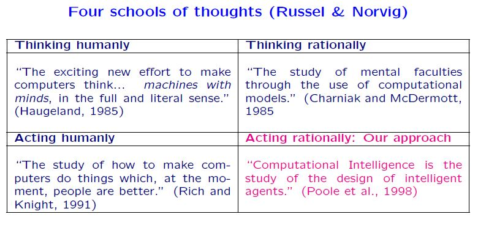
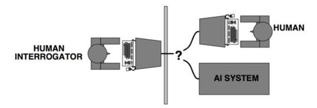
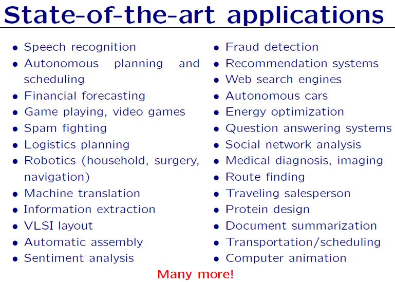

1. Introduction to AI
1.1 Overview of AI
- Definition of AI:
The study and design of intelligent agents, where an intelligent agent is a system that perceives its environment and takes actions that maximize its chances of success.
- 4 schools of AI thoughs:
- Thinking humanly: How to make computers have a mind, or think.
- Acting humanly: How to make computers do things.
- Thinking rationally: Computational models to mimic our mental faculties.
- Acting rationally: We want the machine to act rationally rather than humanly.

- Thinking humanly: cognitive approach.
- Today, Cognitive Science and Artificial Intelligence are distinct disciplines.
- Acting humanly:
- Turing test (Alan Turing 1950): A computer passes the test of intelligence, if it can fool a human interrogator.
 - Major components of AI: knowledge, reasoning, language, understanding, learning.
- Turing test (Alan Turing 1950): A computer passes the test of intelligence, if it can fool a human interrogator.
- Thinking rationally: Laws of thoughts.
- Codify “right thinking” with logic.
- Problems: Not all knowledge can be expressed with logical notations. Computational blow up.
- Acting rationally:
- A rational agent is one that acts so as to achieve the best outcome, or when there is uncertainty, the best expected outcome.
1.2 Applications of AI
- Natural language processing (NLP):
- Speech recognition: Leverage deep neural networks to handle speech recognition and natural language understanding.
- Machine Translation: Statistical Machine Translation leverages the vast amounts of available translated corpuses.
- Recommendation systems (collaborative filtering): Leverage your existing emails, historical data, to propose maybe some advertisement to make your internet browsing experience better.
- Computer vision: processing visual data.
- Handwriting recognition.
- Face detection, the Viola-Jones method.
- Face recognition.
- Detecting cancer in mammography.
- Robotics:
- Autonomous driving.
- Adversarial search:
- Game playing: chess, jeopardy, AlphaGo.
